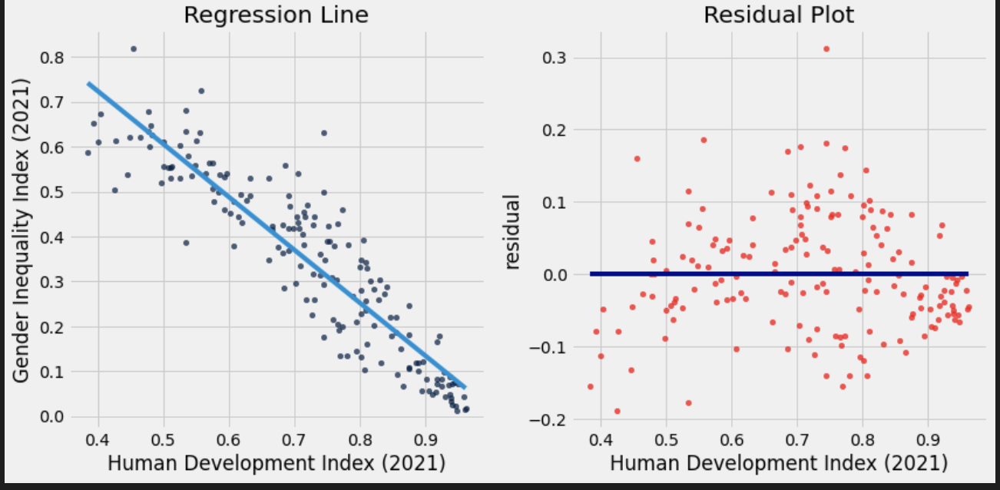
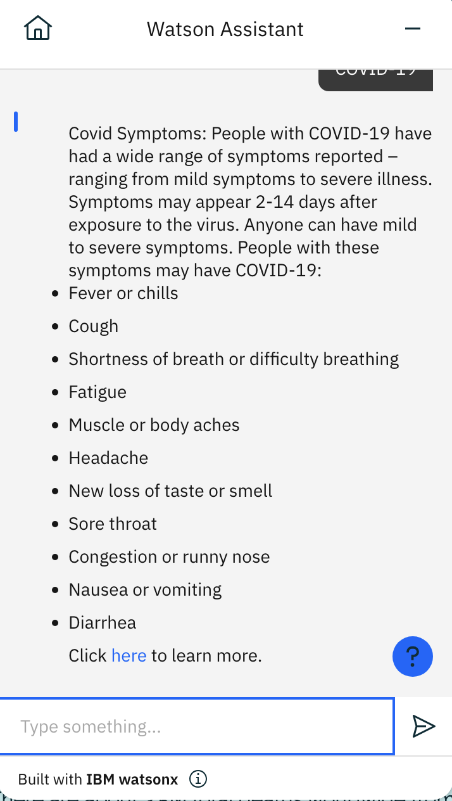
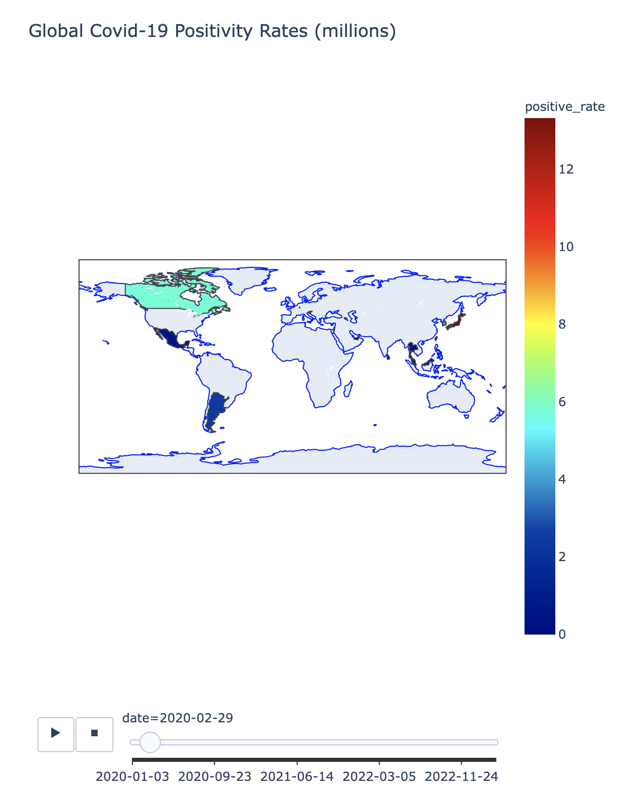

Projects
Gender Inequality based on GDP project.
The Gender Inequality Project investigates the relationship between gender inequality and a country's economic performance by analyzing the correlation between the Gender Inequality Index (GII) and Gross Domestic Product (GDP) across more than 100 countries. Utilizing publicly available datasets from the World Health Organization, the data was meticulously cleaned and formatted using Python to ensure accurate and reliable analysis. Through the use of data visualization tools like Matplotlib, line graphs with lines of best fit and p-values were generated to reveal statistically significant trends linking gender equality with economic prosperity. The analysis was further enriched by integrating findings from over ten scholarly studies, providing a comprehensive understanding of how reducing gender disparities can contribute to stronger economic growth. The project aims to offer actionable insights by developing predictive models that estimate how much each country needs to reduce its GII to achieve meaningful improvements in GDP,
COVID-19 AI Chatbot
The AI Chatbot I developed is designed to provide accurate and reliable information regarding COVID-19-related concerns. Built using natural language processing (NLP) techniques specifically from IBM Watson, the chatbot can understand and respond to user inquiries about COVID-19 symptoms, prevention measures, vaccination guidelines, and the latest health protocols. By sourcing data from verified health organizations like the World Health Organization (WHO) and the Centers for Disease Control and Prevention (CDC), the chatbot ensures that users receive up-to-date and trustworthy information. This project was aimed at reducing misinformation and offering immediate support to individuals seeking guidance during the pandemic, making critical health information more accessible and easier to understand.
Machine Learning Model
The Global Choropleth Model I developed visualizes COVID-19 positivity rates across countries from 2020 to the present. This interactive model uses color gradients to represent the severity of positivity rates, allowing users to easily identify regions with high or low infection levels over time. By integrating real-time data from reliable sources such as the World Health Organization (WHO) and global health databases, the model dynamically updates to reflect current trends. Users can interact with the map to view country-specific statistics, track the progression of the pandemic, and analyze how different regions have been impacted throughout various stages.
